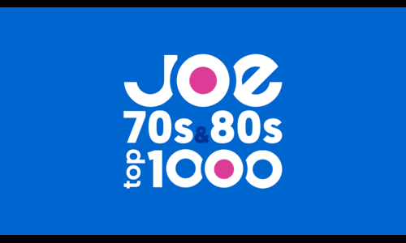
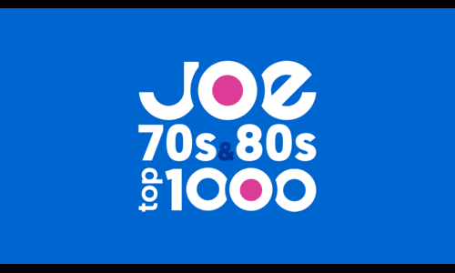

Likes
| Soort | Titel | Artiest/Producer | Foto |
|---|---|---|---|
| Film | Oppenheimer | Cristopher Nolan | |
| Muziek | Alle 70's en 80's muziek |  | |
| Band | Coldplay | 
| |
| Voornaam | Familienaam | Postcode | Leeftijd |
|---|---|---|---|
| Ben | Edwards | 8900 | 21 |
| San | Boemkool | 8500 | 20 |
| Petra | Demorgen | ||
| Kas | De kast | 6500 | 42 |
| Jan | Ghisquere | 8960 | 45 |
| Adam | Stevens | 8833 | 26 |
| Charlotte | Vanbeselare | 8800 | 96 |
| Datum | Titel | Omschrijving |
|---|---|---|
| Opleiding | ||
| 2017 - 2024 | Heilige Familie Ieper | Informaticabeheer |
| 2024 - ...... | Vives Kortrijk | Bachelor in de toegepaste informatica |
| 2024 - 2025 (voorzien) | Syntra West | Beleggingsadviseur avondschool |
| Werk | ||
| 2020 - 2021 | Speelpleinwerking Moorslede & Dadizele | Animator |
| 2021 - 2023 | Speelpleinwerking Moorslede & Dadizele | Hoofd-Animator |
| 2023 - ....... | Speelpleinwerking Moorslede & Dadizele | Pleinverantwoordelijke |
| 2023 - ...... | RTS Voice Data Video Communication | Student Service / Configuration Engineer |
Enkele hobbies waar ik graag mijn vrije tijd aan spendeer!
| Soort | Titel | Artiest/Producer | Foto |
|---|---|---|---|
| Film | Oppenheimer | Cristopher Nolan | |
| Muziek | Alle 70's en 80's muziek |  | |
| Band | Coldplay |
| |
| Vak | Ian-Thomas(ik) | Sanjeyan | Adrian | Ben |
|---|---|---|---|---|
| Fundamentals of Programming | 11/20 | 14/20 | 10/20 | |
| English | 12/20 | 13/20 | 15/20 | 19/20 |
| Computer Networking | 15/20 | 14/20 | 14/20 | |